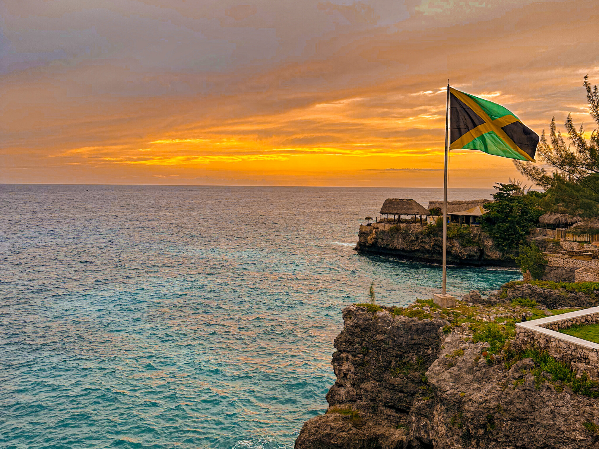
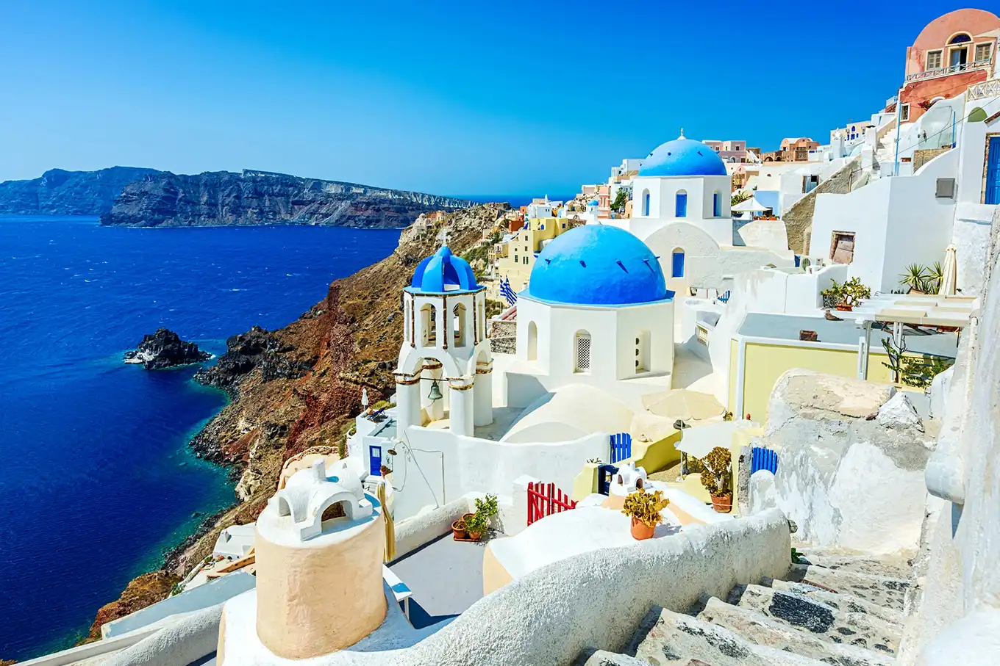
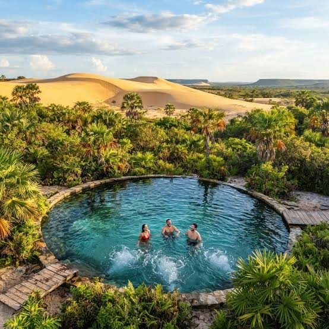

Kingston - Jamaica

Conheça as praias, paisagens, e pontos turísticos de um país com uma cultura fascinante, desde a música até a culinária.

Conheça as praias, paisagens, e pontos turísticos de um país com uma cultura fascinante, desde a música até a culinária.

Localizada no arquipélago das Cíclades, esta ilha vulcânica atrai viajantes do mundo inteiro em busca de paisagens românticas, pores do sol inesquecíveis e cenários de tirar o fôlego.

O Jalapão, no estado do Tocantins, é o destino perfeito para quem ama ecoturismo e aventura. Com uma vasta área de natureza intocada, a região combina savana, rios cristalinos, grandes paredões de rocha e dunas alaranjadas.